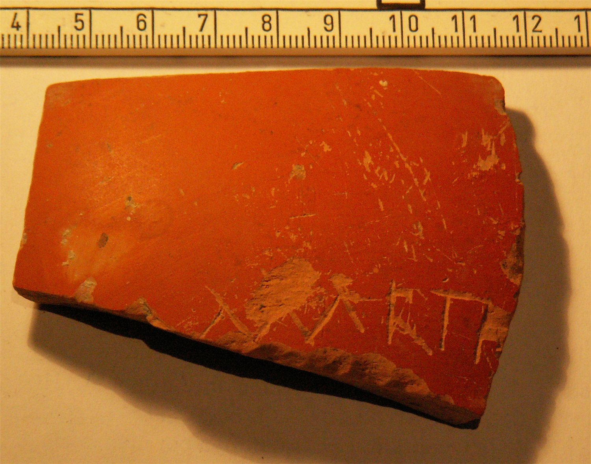

pompelo-032-marti
Grafito nominal «Marti(i)» (Pompelo, Plaza del Castillo, Pamplona, Navarra)
Pompelo (Pamplona, Navarra), Hispania citerior · fin s. II-III d.C.

Texto
1Marti(i)
Comentario
En este caso, al contrario que en la nº 2, la inscripción podría continuar a otra variante como Martini, aunque el precedente de un grafito Marti hace decantarse por esta opción.
Descripción
- Soporte
- Fragmento de pared de un recipiente de T.S.H. lisa. Pertenece a un recipiente abierto tipo fuente, pasta de color naranja claro y barniz uniforme poco brillante.
- Disposición
- Localización del grafito: Pared.
- Datación
- fin s. II-III d.C.
- Lugar de origen
- Pompelo (Pamplona, Navarra), Hispania citerior
- Hallazgo
- Excavación de la Plaza del Castillo de Pamplona (Gabinete Arqueológico Trama, 2001-2003), sector 3. Los estratos están revueltos (abundan las tumbas musulmanas del sector 3): la datación se basa en las formas cerámicas y el contexto es el de un barrio artesano.
- Ubicación actual
- Almacén de Arqueología del Gobierno de Navarra
Bibliografía
- M. Unzu; P. Ozcáriz Gil, «Grafitos nominales de la Plaza del Castillo de Pamplona», Los vascones de las fuentes antiguas: en torno a una etnia de la antigüedad peninsular (2009), pp. 499-512.